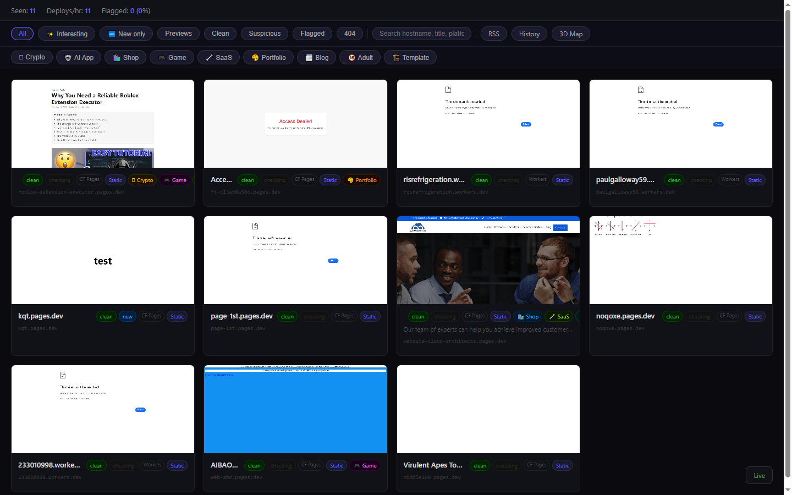
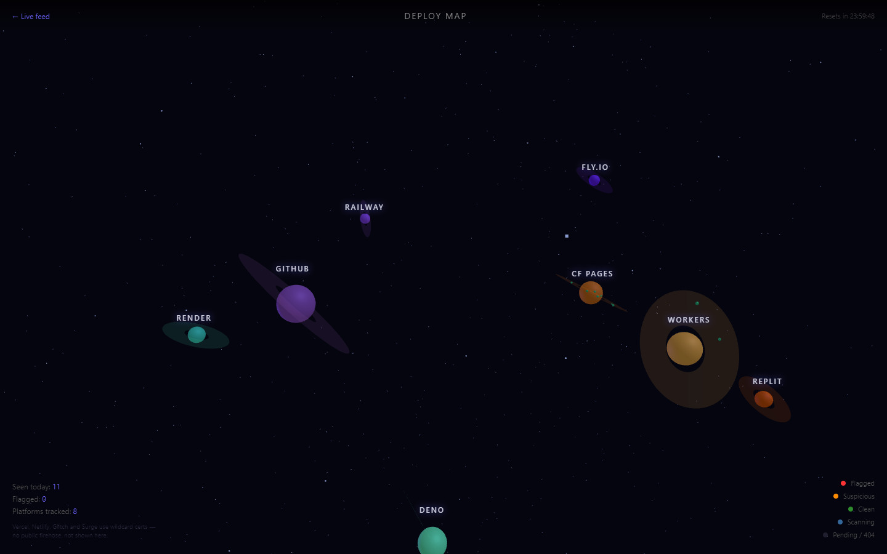
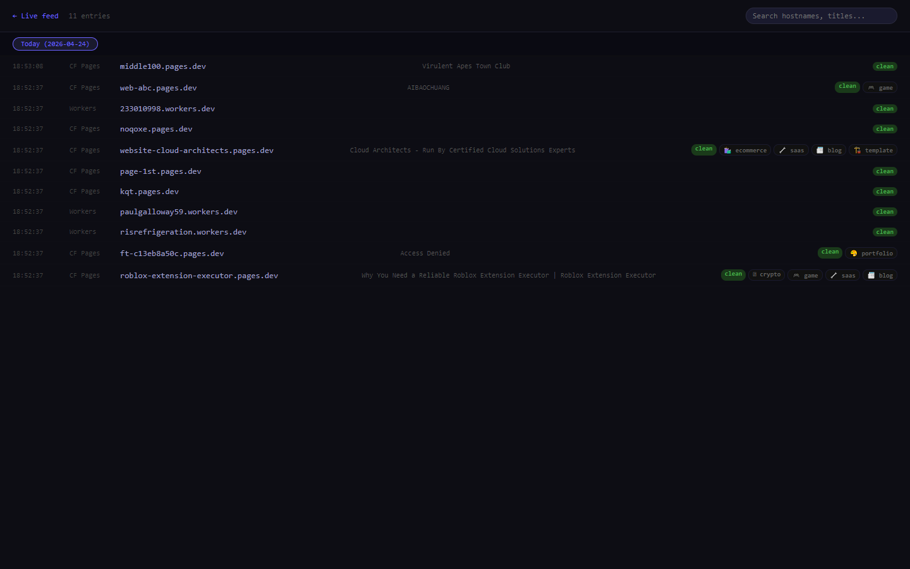

deployment-feed is a real-time ledger of TLS cert activity on free hosting platforms, pulled straight from Certificate Transparency logs. Every time a new deployment on Cloudflare Pages, Workers, Render, Replit, Deno, Railway, Fly.io, or GitHub Pages gets issued a cert, it lands in this feed within seconds.
Cards show a live Playwright screenshot of the site, a framework fingerprint (Next.js, Astro, Svelte, WordPress), and category chips detected from the content (Crypto, AI App, Shop, Game, SaaS, Portfolio, Blog). Suspicious hostnames get escalated to URLScan sandbox scans automatically. The whole thing is a single Node process. Self-host it, point it at your own CT polling schedule, and watch the open internet unfold.

// Live feed. Each card is a hostname whose cert was issued in the last minute or two.
Certificate Transparency is a public append-only log that every CA writes to within seconds of issuing a TLS cert. Anyone can read it. This tool polls three CT logs in parallel and filters for hostnames that belong to tracked free hosting platforms:
*.pages.dev and *.workers.dev.Supplemented with crt.sh cross-checks per hostname so the feed can tell genuinely new deployments apart from routine 90-day Let's Encrypt renewals. Cards are tagged new or renewal accordingly, and there's a filter chip to show only brand-new deployments.
Vercel, Netlify, Glitch, and Surge issue a single wildcard cert per domain. Individual deployment hostnames never hit CT logs. To see those you'd need per-user API tokens from each platform, which defeats the point of passive observation.
Every hostname that passes the platform filter hits a queue. Workers pull from the queue and run a fast URLhaus malware check, fetch the live HTML for content fingerprinting, then take a Playwright screenshot of the rendered page. The screenshot cache is persistent so repeated views don't re-render.
Framework detection runs against the raw HTML and response headers. Common frameworks and static generators are identified (Next.js, Astro, SvelteKit, Remix, Gatsby, Hugo, Jekyll, Eleventy). AI tool fingerprints get called out separately: pages built with Lovable, Bolt, v0, Cursor, and their cohort stamp themselves in recognisable ways.
Category chips come from keyword + structural fingerprints on the HTML. An Ethereum dApp pulling web3.js, a Shopify-clone storefront, a chatbot demo with an OpenAI API key in the client bundle - each has distinct signal. The chips aren't exhaustive but they catch the obvious ones for filtering.
Every tracked platform is a planet. Size of the planet scales with today's deployment volume. Deployments that pass scans quietly orbit as green dots. Suspicious ones turn yellow, flagged ones red, in-progress scans blue. Reset at midnight. No personally-identifying data ever renders in the map. It's a live view of what parts of the free-hosting commons are active right now.

// Deploy Map. Cloudflare Workers dominates volume. Fly.io is quiet. Deno sits in the outer orbit.
Scams and malware campaigns aggressively abuse free hosting because the cost of burning a hostname is near zero. deployment-feed catches a non-trivial amount of this in passing:
wallet, login, verify, metamask, coinbase). Suspicious hits get escalated to URLScan sandbox scans automatically, so free-tier credits stay focused on the real targets.The history view stores every hostname deployment-feed has ever seen, grouped by day with a full-text search. Click a date tab to view everything from that day. Entries never disappear unless you explicitly purge the DB. Handy for post-incident research (“we got scanned by this hostname two weeks ago, what else did it do?”) or for watching long-term trends in platform usage.

// History archive. Every hostname ever seen, indexed by day.
Pure Node.js. Express for the HTTP surface. Playwright for screenshots. Vanilla HTML + JS for the frontend (no framework, no build step). SQLite for the local cache and history. Optional Upstash Redis when you want to share state across instances. The whole thing clones, installs, and boots in under a minute. No API keys required to run the basics - every integration (URLScan escalation, GitHub Events API, Discord alerts, Upstash consensus) is a strict opt-in via env var.
Designed as a self-host tool on purpose. Hosted version would have to pay for outbound bandwidth to fetch every screenshot and run every URLScan escalation. Self-hosted, you eat your own latency and pay only for what you actually look at.
The tool is stable and self-hostable. Current limit is the Playwright worker throughput under sustained Cloudflare Nimbus volume - roughly 15k cards per 24 hours on a 4-core VPS. More aggressive volume needs a worker pool.
Clone and run locally. No API keys required for basic mode.
→ github.com/C-Moir/deployment-feedDeploying a hosted version or want a custom fork for a security team?
Get in touch →